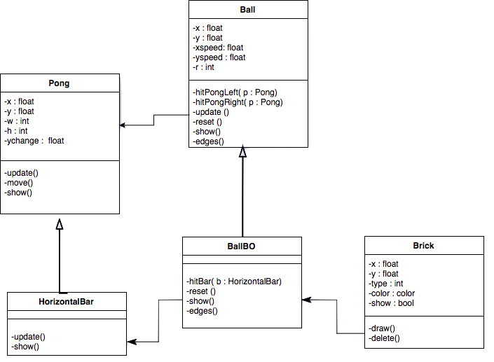
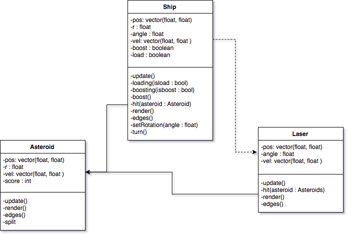
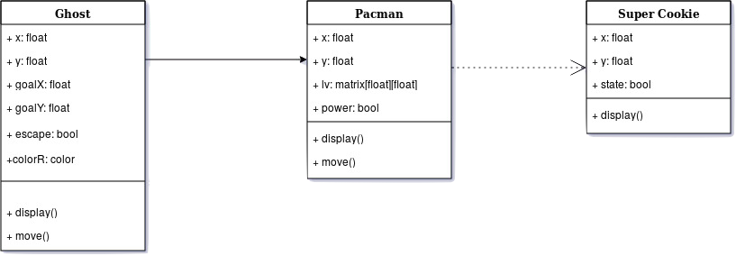

INTRODUCCIÓN
Problemática
Con este proyecto se pretende crear una plataforma de los juegos más reconocidos del tipo arcade para poder ser jugados en cualquier computador.
Marco teórico

Objetivo general
Crear una plataforma en la que fácilmente se encuentren y jueguen algunos de los videojuegos más importantes de los años 70's y 80's.
Objetivos específicos
- Entender el funcionamiendo y la lógica básica del front-end de una página web como también de los videojuegos.
- Realizar diversos juegos con aspecto retro usando conceptos propios de programación orientada a objetos y programación estructurada.
- Reforzar los conocimientos adquiridos durante el semestre en programacion orientada a objetos.
Diagrama de clases
PONG

Space Invaders

Asteroids

Pacman
